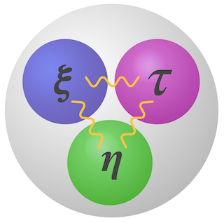

SAD: Sliced Anti-symmetric Decomposition for Collaborative Filtering

Introduction
This repo implements a collaborative filtering model using a novel tensor decomposition method named Sliced Anti-symmetric Decomposition (SAD) for personalized recommendation. In addition, one can find several state of the art (SOTA) models for recommendations in this repo. From this perspective, this library can be viewed as an integration of SOTA recommendation models in a more or less principled manner such that benchmarking can be easily performed.
Detailed API documentation can be found here.
The list of SOTA models integrated into this library includes
Model Name |
Implementation |
Reference |
|---|---|---|
SAD |
||
BPR |
||
SVD |
||
Matrix Factorization (MF) |
||
Probabilistic MF (PMF) |
||
Factorization Machine (FM) |
||
Neural Collaborative Filtering (NCF) |
||
Variational AutoEncoder ($\beta$-VAE) |
About SAD Model
SAD is a new model for collaborative filtering (CF) based on personal feedbacks. The feedbacks can be explicit, in which case explicit ratings exist. They can also be implicit, suggesting only user-item interactions are observed. For now we consider the most basic and common scenario in which only implicit feedbacks are available. In contrast to traditional recommendation models where a latent representation for each user (user vector) and item (item vector) are estimated, SAD introduces one additional latent vector to each item, using a novel three-way tensor view of user-item interactions. This new vector extends user-item preferences calculated by standard dot products to general inner products, producing interactions between items when evaluating their relative preferences. SAD reduces to SOTA collaborative filtering models when the new vector collapses to one. In SAD we allow its value to be estimated from data. The model of SAD is simple, resulting an efficient stochastic gradient descent (SGD) algorithm consuming only first order gradient for parameter estimation.
Extensive simulation studies have demonstrated the power of SAD model and the effectiveness of the inference algorithm we have developed. With the SGD algorithm, SAD is able to converge to accurate parameter estimates in a few dozens of SGD updates, producing practical effeciency on par, if not better, than the Bayesian Personalized Ranking (BPR) model. In benchmarking with SOTA models on real datasets including Netflix Prize, Movie-Lens 1M and Recipe Review data, SAD is able to generate personalized item preferences mostly consistent with ground truth, at the same time produce more accurate personalized recommendations.
About this Package
The library hosted by this repo implements the SAD model and a SGD algorithm for
inference. For the purpose of benchmark, we also add several SOTA recommendation models
to the library. Those models are wrapped into classes where a set of unified API is
provided. The source code of the library can be found under ./sad. For detailed
documentation, see here.